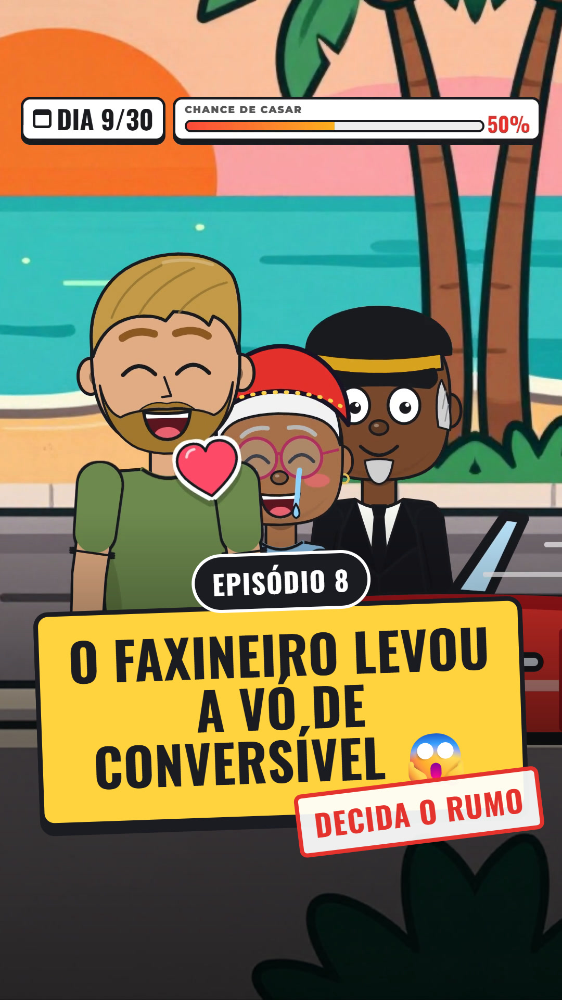
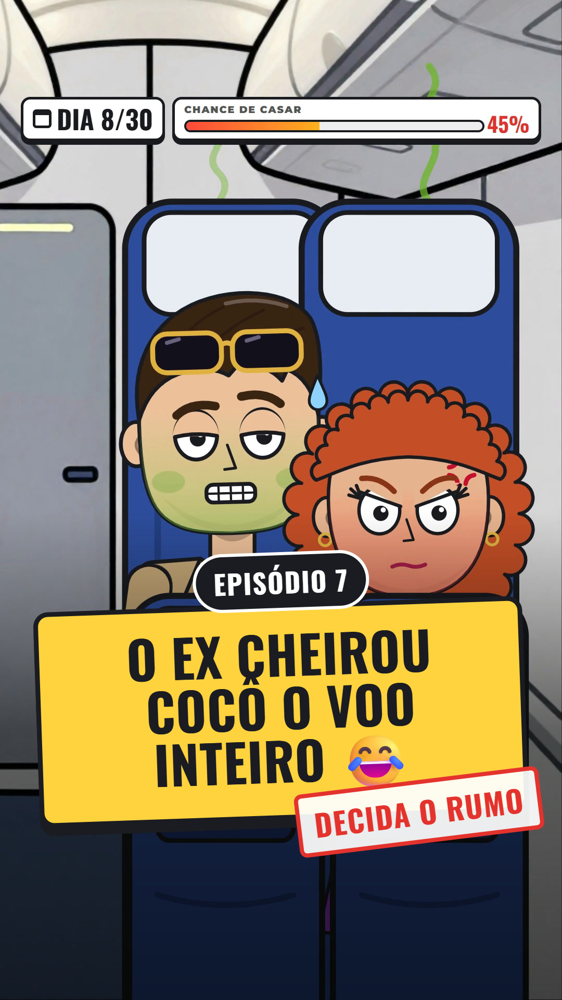

2026-11-16-mendigo-ep08E se o seu ex, que te traiu, humilhasse o seu namorado na frente da sua família inteira? 😤 Só que esse namorado é bilionário. 😏 Vocês mandaram o Tuca desafiar o Murilo, e o aperto de mão já deixou ele na pontinha do pé. 😂 Nos 90 anos da vó Zefa, o Murilo deu um jogo de panelas da promoção… e a vó: "Quer que eu cozinhe no meu aniversário?" 🤣 Aí o Seu Bené chegou de conversível pra levar a vó pra ver o mar pela primeira vez. 🌅 "É alugado!" "Não é meu, não. É do meu patrão." (O patrão dele é ele mesmo. 🤫) Só que, na volta, a Lara puxou o Tuca de lado: "Que patrão empresta um carro desse pra um faxineiro?" 😳 E agora, o que o Tuca faz? 💼 CONTA: conta que é o dono da Valente (e ela pode se sentir enganada) 🤥 INVENTA: inventa uma história (e mente pra quem já foi traída) Comenta uma palavra. A mais votada vira o episódio 9! 👇 Segue a página pra não perder o episódio 9! ✅ E marca aquele amigo que daria panela de presente igual o Murilo. 😂 #novelinha #historia #desenhoanimado #milionario #romance #decidaorumo

2026-11-15-mendigo-ep07Se o seu ex que te traiu passasse o voo inteiro cheirando cocô, você ia amar, né? 💩✈️ Vocês escolheram FUNDÃO: o Murilo e a prima foram parar na fileira 38, de frente pro banheiro. 🚽 E o Tuca ainda deu um cascudo no Murilo e soltou uma bomba no banheiro do fundão… 😂 Só que no desembarque o Murilo entregou que o "genro diretor" é faxineiro… e ainda desafiou: "quero ver o presente que o faxineiro vai dar pra vó nos 90 anos". 😳 E agora, o que o Tuca faz? 🧹 MANTÉM: segue disfarçado de faxineiro e engole essa 🎁 DESAFIA: chama o Murilo pra ver quem dá o melhor presente pra vó Comenta uma palavra. A mais votada vira o episódio 8! 👇 Segue a página pra não perder o episódio 8! ✅ E marca aquela amiga que queria ver o ex nessa situação. 😂 #novelinha #historia #desenhoanimado #milionario #romance #decidaorumo